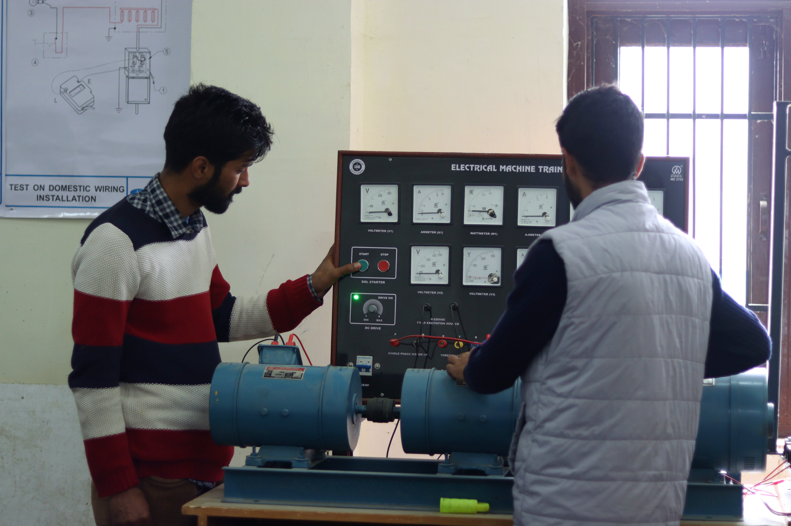
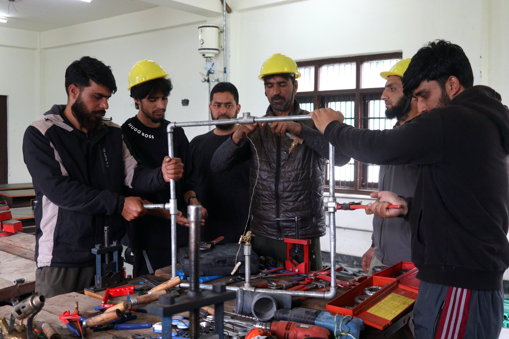

Computer operator and programming Assistant

The Computer Operator and Programming Assistant (COPA) trade focuses on building a strong foundation in computer operations, software applications, and basic programming skills. Trainees learn how to efficiently operate computer systems, manage files and data, and use essential office tools such as word processors, spreadsheets, and presentation software for day-to-day professional tasks. Along with this, the trade introduces programming concepts using languages like C, Java, or Python, helping students understand logic building, problem-solving, and the development of simple applications. Practical training also includes working with databases, internet usage, email handling, and basic web development using HTML, CSS, and sometimes JavaScript. This trade is highly useful in today's digital world as it prepares students for various roles such as data entry operator, computer operator, junior programmer, or office assistant, and also provides a strong base for further studies in IT and software development, making it a valuable career path in both government and private sectors.
Dress Making

The Dress Making trade focuses on developing practical skills and creativity in designing, cutting, stitching, and finishing garments for various purposes. Trainees learn how to take accurate body measurements, draft patterns, select suitable fabrics, and use sewing machines and tools to create different types of clothing such as dresses, uniforms, and traditional wear. The course also covers basic fashion design concepts, embroidery, alterations, and repair work, helping students understand both the technical and aesthetic aspects of garment production. Through hands-on practice, learners gain precision, attention to detail, and an understanding of current trends and customer preferences. This trade is highly useful as it opens opportunities for self-employment such as starting a tailoring shop or boutique, as well as jobs in garment industries, fashion houses, and textile units, making it a valuable skill for both income generation and creative expression.
Electrician

The Electrician trade focuses on providing comprehensive knowledge and practical skills related to electrical systems, wiring, and equipment used in residential, commercial, and industrial settings. Trainees learn how to install, maintain, and repair electrical wiring, circuits, motors, transformers, and various electrical appliances while strictly following safety standards and procedures. The course covers important concepts such as electrical theory, reading circuit diagrams, fault detection, earthing, and the use of testing instruments like multimeters. Students also gain hands-on experience in wiring houses, assembling electrical panels, and troubleshooting electrical faults, which builds strong problem-solving and technical abilities. This trade is highly valuable as electricity is essential in every sector, creating wide career opportunities in construction, maintenance, manufacturing industries, and government services, while also enabling self-employment as an independent electrician or contractor.
Arcitectural Draughtsman

The Architectural Draughtsman trade focuses on developing the skills required to create detailed drawings and plans for buildings and structures used in construction. Trainees learn how to prepare architectural drawings such as floor plans, elevations, sections, and layouts using both traditional drafting methods and modern computer-aided design (CAD) software like AutoCAD. The course covers essential topics such as building materials, construction techniques, measurements, scale drawing, and interpretation of design specifications, helping students understand how a structure is planned and executed. Practical training emphasizes accuracy, visualization, and attention to detail, enabling learners to convert design ideas into precise technical drawings that engineers and builders can follow. This trade is highly useful as it plays a crucial role in the construction and infrastructure sector, offering career opportunities in architectural firms, construction companies, and government departments, as well as the possibility of freelance work in drafting and design services.
Plumber

The Plumber trade focuses on developing the practical skills and technical knowledge required to install, maintain, and repair water supply systems, drainage systems, and sanitary fittings in residential, commercial, and industrial buildings. Trainees learn how to work with different types of pipes and materials such as PVC, copper, and GI, along with fittings, valves, and fixtures like taps, sinks, toilets, and water heaters. The course covers important concepts such as pipe layout, water pressure, leakage detection, drainage planning, and basic safety practices, while also giving hands-on experience in cutting, threading, joining, and fixing pipelines. Students are trained to read basic drawings and plans, troubleshoot plumbing issues, and ensure proper water flow and waste disposal systems. This trade is highly useful as plumbing is essential in every building, creating strong demand for skilled workers in construction, maintenance services, and government projects, while also offering excellent opportunities for self-employment as an independent plumber or contractor.